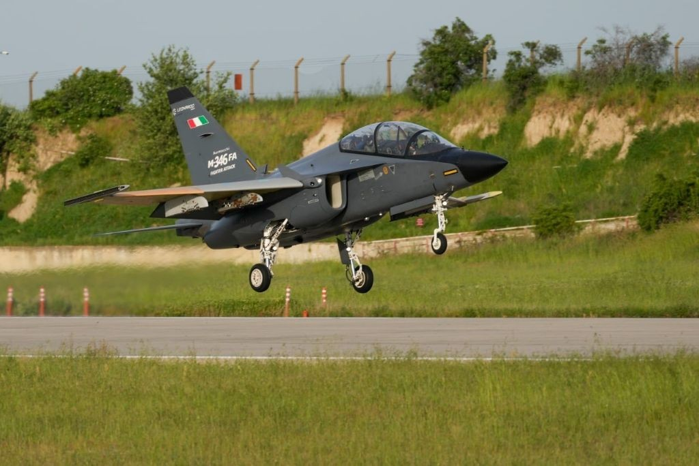

The evolution of contemporary air warfare is undergoing an unprecedented doctrinal and technological transition, driven by the imperative to integrate autonomous systems and piloted platforms into a single, fluid combat network. The recent flight tests of the K-SWARM program, conducted jointly by Italy's Leonardo and Turkey's Baykar, deserve deep analytical attention, but not for the most obvious reasons. The enthusiasm for the visual success of an M-346 trainer flying in perfect formation with a stealth KIZILELMA combat drone should not obscure a fundamental reality: Europe does not yet have a "loyal wingman" ready for high-intensity combat. Rather, this event represents a formidable engineering building block that unlocks a much more complex narrative. A detailed analysis of this partnership reveals that the core of the matter lies in industrial synergy and geopolitical dynamics. The K-SWARM program is shaping up to be Europe's most pragmatic and politically dense attempt to close its gap in unmanned air combat, fusing extraordinary Turkish iteration speed and production capacity with Italian systemic, sensory, and certification supremacy.
The Anatomy of the K-SWARM Program and the Çorlu Trials
In May 2026, at Baykar's flight test center in Çorlu, Turkey, the K-SWARM program marked its crucial transition from synthetic theory and simulations to live flight operations in the physical domain. The test campaign demonstrated for the first time the practical feasibility of collaborative operations between crewed and uncrewed aircraft, a tactical doctrine universally known as Crewed/UnCrewed Teaming (CUC-T) or Manned-Unmanned Teaming (MUM-T). The operational architecture of the trial involved three distinct but interconnected platforms: a Leonardo-owned M-346FA (Fighter Attack) aircraft, a KIZILELMA UCAV (Unmanned Combat Aerial Vehicle) developed and operated by Baykar, and a T-346A belonging to the Italian Air Force acting as a chase aircraft for safety observation.
The flight sequence represented a rigorous testbed for core autonomy technologies. The KIZILELMA executed taxiing and takeoff in a fully autonomous mode, without direct intervention from a human operator on the ground, before navigating to the designated airspace to rejoin the formation led by the M-346FA. Once visual contact and electronic synchronization were established, the two-person crew aboard the Italian light jet assumed full tactical and directional control of the uncrewed aircraft. Using a newly integrated avionics suite and a dedicated computing system for CUC-T operations, the M-346FA pilots issued direct commands to the drone, ordering complex position changes, tactical separation maneuvers, and subsequent formation rejoins.
The success of these maneuvers was guaranteed by the intersection of source codes and hardware from two different engineering cultures. On one side, the KIZILELMA leveraged advanced "Smart Fleet Autonomy" algorithms, developed and refined in Baykar's Hardware-in-the-Loop (HIL) laboratory. These algorithms allow the aircraft to interpret high-level commands from the human pilot (e.g., "move to the right flank at a two-mile distance") and autonomously translate them into flight inputs, managing aerodynamic control surfaces and collision avoidance without burdening the human crew. On the other side, Leonardo provided the neural infrastructure for the operation: an ultra-high-end radio frequency data exchange system that allowed bidirectional, real-time sharing of all flight parameters, sensors, and telemetry between the two platforms. This tactical network was protected and monitored by the GCC Tactical Platform, a proprietary cyber defense system developed by Leonardo that ensures the datalink remains impervious to electronic intrusion, decryption, or hijacking attempts.
The transition to live flight was significantly accelerated by months of virtual preparation. Before starting the engines on the Çorlu runway, the engineering teams of both companies conducted extensive simulated missions. This process involved the combined use of the M-346 full mission simulator, located at Leonardo's Venegono facilities, remotely interfaced with the Product Capability and Concept Laboratory (PC2LAB) in Turin. This digital engineering approach allowed them to test control logics, refine the human-machine interface (HMI), and validate tactical procedures in the virtual realm, drastically reducing the risks associated with the first close-formation flights between a piloted jet and an experimental autonomous aircraft.
The Operational Reality: Controlled Airspace vs. Contested Environment
While the engineering milestone achieved in Çorlu is undeniable, a rigorous analysis requires separating the demonstration's success from true combat readiness. The fact that two independently developed platforms—one in Italy and the other in Turkey—were able to communicate and operate together in live flight undoubtedly moves the program beyond mere synthetic simulations and corporate presentations. However, flying in close formation within highly controlled airspace, under predefined parameters and optimal weather and network conditions, is doctrinally and technologically distant from operating inside fiercely contested airspace.
Flying in close formation within controlled airspace is doctrinally and technologically distant from operating inside fiercely contested airspace.
Modern military doctrine is based on the ability to penetrate and dismantle adversarial Anti-Access/Area Denial (A2/AD) bubbles. In a real operational context, a "loyal wingman" must be able to survive and function in the presence of a heavily degraded electromagnetic spectrum. Currently, there is no public evidence that the CUC-T architecture tested in K-SWARM has been subjected to tests against peer-level electronic warfare (EW) systems, in conditions of denied satellite communications and radio frequencies (jamming), or in the face of modern layered integrated air defenses.
Furthermore, the mature concept of MUM-T requires much more than simply replicating a leader aircraft's maneuvers. We have not yet seen the collaborative employment of weapons (where the piloted aircraft designates a target and the drone autonomously releases the munition), the autonomous generation of multiple attack paths in response to unforeseen threats, or, critically, a single crew simultaneously managing a "swarm" of numerous unmanned aircraft during a complex combat mission. Currently, the control relationship is limited to a single autonomous platform managed by a dedicated crew. The ultimate goal of the K-SWARM program is precisely to harness maturing AI technologies to allow uncrewed systems to gradually transition from remote piloting to true local decision-making autonomy. In other words, K-SWARM qualifies as an indispensable technological building block, but it does not yet represent—nor does it claim to at this stage—an operational loyal-wingman capability ready for tactical deployment.
The Metamorphosis of the M-346: From Trainer to Tactical Command Node
One of the most intriguing operational aspects to emerge from the K-SWARM campaign is the doctrinal metamorphosis undergone by Leonardo's aircraft. The Aermacchi M-346 Master, originally born from the dissolution of a partnership with the Russian company Yakovlev in the early 2000s, is widely recognized as one of the most advanced jet trainers (AJT) globally. Designed with a quadruplex digital fly-by-wire flight control system and powered by two Honeywell F124-GA-200 turbofans, the M-346 is capable of transonic flight and excels at replicating the high-angle-of-attack flight dynamics of advanced fourth- and fifth-generation fighters.
The M-346's inclusion in the K-SWARM program definitively detaches the aircraft from its purely training-related image, projecting it into the collaborative combat domain. Entrusting an advanced trainer or light fighter with the role of an airborne command node for drone swarms responds to a stringent economic and operational logic. Future sixth-generation fighters and current fifth-generation stealth aircraft possess the necessary architectures to manage drones, but using their highly valuable and expensive flight hours to develop tactics, refine human-machine interfaces, or conduct missions in low- to medium-intensity theaters is cost-ineffective. The M-346 offers air forces a crewed platform with a sustainable acquisition and operating cost, ideal for maturing MUM-T operational concepts before scaling them to frontline platforms.
This transition to active combat is supported by a profound technological renewal. In July 2024, during the Farnborough International Air Show, Leonardo announced the launch of the "Block 20" standard for the entire M-346 fleet. The light combat variant, designated M-346 F Block 20, benefits from a radical upgrade of the human-machine interface, replacing the six traditional multi-function displays with two Large Area Displays (LAD), integrated with a new low-profile Head-Up Display and an augmented reality Helmet Mounted Display (HMD). Most importantly, the Fighter Attack variant incorporates an AESA (Active Electronically Scanned Array) radar with fire control capabilities, the integration of a datalink for air-to-air and air-to-surface missiles, and a new identification friend-or-foe (IFF) system.

The M-346's electronic infrastructure already includes the Embedded Tactical Training System (ETTS), capable of emulating radars, targeting pods, and complex electronic warfare scenarios in live flight via datalink. By adapting this digital backbone with the GCC Tactical Platform, Leonardo is transforming the light fighter into a true "Airborne Command Node." Doctrinally, this function is reminiscent of the Battlefield Airborne Communications Node (BACN) developed by the US Air Force. The BACN, mounted on high-altitude platforms like the E-11A, acts as a real-time communications gateway to overcome line-of-sight (LOS) limitations and translate incompatible tactical protocols across domains. The M-346FA in the K-SWARM program performs an analogous function but is specifically oriented towards the tactical-kinetic level: it acts as a secure bridge and local orchestrator for the swarm's distributed sensors and weapons, operating close to the front lines.
The Autonomous Vector: KIZILELMA and the Rise of Turkish Air Power
While the M-346 provides the human command component, the KIZILELMA represents the culmination of the Turkish aerospace industry's rapid evolution in unmanned systems. Developed by Baykar in close collaboration with Turkish defense giants like Aselsan and TÜBİTAK SAGE, the KIZILELMA ("Red Apple" in Turkish mythology) is not a simple evolution of the tactical MALE drones that made the company famous in theaters like Syria, Libya, Nagorno-Karabakh, and Ukraine. It is, in all respects, an uncrewed stealth multirole fighter, conceived from its genesis to operate as a loyal wingman in support of Turkey's KAAN national combat aircraft and modernized F-16 fleets.
The KIZILELMA's development process has been surprisingly rapid. Following initial engine and taxi trials in late 2022, the aircraft completed its maiden flight in December 2022. Throughout 2023, it demonstrated a broad flight envelope, reaching an altitude of 9.5 kilometers and flying in public formation with a SoloTürk F-16C during TEKNOFEST. The production prototype (PT-3), which significantly departs from the early aerodynamic models and integrates an updated avionics architecture, flew in September 2024, marking the start of mass production, with Baykar aiming to exceed ten units produced by 2026.
The KIZILELMA's operational capabilities place it at the top of its category. The most advanced prototype, designated PT-5 (TC-ÖZB5), has been equipped with fighter-class sensors, including the Toygun electro-optical targeting system (EOTS) and, crucially, the national Murad-100A AESA radar developed by Aselsan. Installing an AESA sensor on an autonomous drone represents a strategic force multiplier. The effectiveness of this integration was unequivocally demonstrated in November 2025, when the KIZILELMA became the first UCAV in the world to successfully conduct a live-fire test using a beyond-visual-range (BVR) active radar-guided air-to-air missile, the Gökdoğan. During the test, the Murad radar locked onto a jet-powered target drone at long range, and the missile—executing a loft maneuver immediately after launch to maximize kinetic energy—destroyed the target in a head-on engagement.
The KIZILELMA became the first UCAV in the world to successfully conduct a live-fire test using a beyond-visual-range active radar-guided air-to-air missile.
This demonstration of air denial capability transforms the KIZILELMA into a formidable asset, capable of engaging adversary fighter aircraft or acting as an advanced kinetic shield for coalition piloted fighters. In addition to air-to-air armament, the drone has already validated the release of air-to-surface guided munitions such as the TOLUN and TEBER-82 bombs.
It is vital to contrast the engineering philosophy behind the KIZILELMA with efforts made by other nations in collaborative combat aircraft (CCA). In the United States, programs like the Marine Corps' PAACK-P have selected the Kratos XQ-58A Valkyrie. The Valkyrie is based on the concept of "attritability": it costs about $6.5 million, a fraction of the price of a non-stealth MQ-9 Reaper, requires no runway (it is rail-launched via rockets), and is recovered via parachute. It is a drone designed to be expendable while still offering great operational ranges and internal weapon bays. Conversely, Baykar's KIZILELMA sits in a higher tier of the CCA spectrum. With a maximum takeoff weight of 8.5 tons, the use of conventional landing gear (also optimized for naval use on STOVL carriers like the TCG Anadolu), and the inclusion of expensive AESA sensors, the KIZILELMA is not conceived as a low-cost smart munition to be sacrificed in the first wave, but as a high-performance "adjunct fighter" intended to survive, fight alongside piloted squadrons, and return to base.
LBA Systems: The Marriage of Industrial Convenience
The industrial aspect of K-SWARM is perhaps the most interesting and consequential fragment of the entire narrative. The Çorlu tests are not exploratory initiatives between unrelated companies, but the first operational fruits of Leonardo Baykar Aerospace Systems (LBA Systems), an equal (50-50) joint venture formally launched at the Paris Air Show in June 2025. This partnership responds to an unequivocal diagnosis made by defense analysts: Europe suffers from a structural and chronic weakness in the military unmanned aircraft industry. Facing a European and global UAS market estimated at around $100 billion over the next decade, the major industrial powers of the Old Continent have accumulated decades of delay, systematically relying on US, Israeli, or, more recently, Turkish imports for tactical and strategic MALE and HALE systems.
LBA Systems addresses this gap by uniting two radically different but perfectly complementary corporate profiles. Turkey's Baykar brings combat-proven platforms and unparalleled commercial success over the last decade (from the TB2 to the Akıncı), ensuring rapid development cycles and economies of scale that traditional European industry struggles to match. Leonardo, Italy's state-controlled defense and aerospace giant, provides the enabling technologies without which Baykar's platforms could never be integrated into complex NATO network architectures: advanced sensors, AESA radars, C4I systems, mission architectures resilient to electronic warfare, and the fundamental ability to obtain military and civil aeronautical certifications in Europe.
By locating LBA Systems' legal and operational headquarters in Italy, the operation qualifies to certify products on the European market, bypassing protectionist barriers and becoming eligible for access to community funds like the European Defence Fund. Leonardo has outlined an aggressive industrial plan that leverages existing infrastructure on Italian soil to localize Turkish production. The Grottaglie plant in southeastern Italy, famous for manufacturing large composite fuselage sections for the Boeing 787, will handle advanced composite manufacturing for the stealth KIZILELMA. In Ronchi dei Legionari, in the northeast—a site with a long heritage of producing target systems like the Mirach 100/5—the production and final assembly of the Bayraktar TB3 (destined for naval use) will be managed. Assembly of the Akıncı and TB2 drones will be concentrated in Villanova d'Albenga, a former Piaggio Aerospace plant now under Baykar's control, where infrastructure upgrades are underway. Finally, engineering hubs in Turin and Rome will provide support for avionics integration, multi-domain innovation, and certification, while the Nerviano site will explore integrating these autonomous fleets with satellite and space infrastructure, essential for control in GPS-denied operational theaters.
This industrial architecture demonstrates that LBA Systems is not a distant future project, but a practical solution offered to European customers to rapidly acquire MUM-T and UCAV capabilities well before the continent's more ambitious and complex sixth-generation combat air programs mature. Leonardo's CEO, Roberto Cingolani, has indicated that, once regulatory hurdles are cleared, the first integrated product (a Turkish-designed drone equipped with European systems) could reach the market as early as 2026.
Rome's "Golden Power": Geopolitics and Sovereign Control
The massive entry of Turkish technology and production into the European defense ecosystem via Italy was not an exclusively commercial process, but a geopolitical operation that required regulatory intervention by the government in Rome. In June 2026, the Italian Council of Ministers approved the joint venture by exercising its special powers, known as "Golden Power". This legal instrument allows the state to impose stringent conditions, modify, or even block corporate transactions and mergers if they threaten national security or involve strategic assets in the defense, infrastructure, and energy sectors.
The approval granted to the Leonardo-Baykar marriage, supported by Defense Minister Guido Crosetto and Foreign Minister Antonio Tajani, was heavily conditioned. The Italian government appeared determined to maintain inflexible sovereign control over where the co-developed technology could be exported and how it should be protected. The imposed restrictions outline a precise political framework: First, sales of drones developed by LBA Systems and any international expansion of the joint venture are strictly limited to countries politically aligned with the European Union and NATO. This clause neutralizes one of the main risks of the operation: Italy ensures that highly sensitive radar sensors or tactical network codes produced by Leonardo do not end up, via a Turkish platform, in the hands of buyers foreign or hostile to Atlantic interests—a plausible eventuality given the often pragmatic, multi-directional, and independent foreign policy adopted by Ankara in the Middle East and North Africa. Second, all sensitive technologies used within the drone programs, as well as data flows and systems engineering, will be formally classified and subject to the maximum security controls required by Italian intelligence agencies. This ensures that European intellectual property and electronic warfare secrets are not compromised, protecting the continuity and integrity of the supply chain.
This regulatory framework clarifies that the Italian government treats the partnership as a veritable acquisition of strategic capabilities, not as a mundane commercial drone project. From a macro-political standpoint, the operation consolidates the bilateral relationship between Italy and Turkey under the Meloni executive. Because Turkey's formal integration process into the European Union has long been paralyzed, Italy is using industrial diplomacy to anchor Ankara—which possesses NATO's second-largest army and an explosively expanding industrial base—to the Western security perimeter. Some analysts had raised fears that LBA Systems could act as a "Trojan horse" allowing Ankara to infiltrate European defense funding or gain retroactive access to secrets of the GCAP sixth-generation fighter program. The rigid application of Golden Power serves precisely to erect political barricades around this collaboration: Europe agrees to close its capability gap by absorbing Turkish aeronautical design, but builds sovereign fences to ensure that control, integration profits, and export directions remain firmly anchored to the Alliance.
GCAP, FCAS, and the Future of European Air Combat
The consolidation of the Leonardo-Baykar partnership through the success of the K-SWARM trials sends powerful shockwaves through the architecture of future European combat programs. The continent is currently divided between two immense efforts to develop sixth-generation "System of Systems": the Global Combat Air Programme (GCAP) led by the UK, Italy, and Japan, and the Future Combat Air System (FCAS) developed by France, Germany, and Spain. Both programs, not expected to enter service before 2035-2040, place a fundamental emphasis on MUM-T, envisioning crewed fighters (Tempest for GCAP and NGF for FCAS) operating surrounded by "Adjuncts," "Loyal Wingmen," or "Remote Carriers".
However, the rapidly deteriorating global security landscape demands an increase in "combat mass" on much shorter timelines. Under this pressure, manufacturers are seeking to integrate collaborative aircraft directly onto the 4.5-generation platforms currently on the flightline. In response to the Italian-Turkish move, the competing consortium is making its own plays. Airbus, a central partner in the Eurofighter consortium and lead for FCAS, announced its intention to fly a Eurofighter Typhoon alongside the US Kratos XQ-58A Valkyrie drone. Dubbed the UCCA (Uncrewed Collaborative Combat Aircraft) project, this effort employs Airbus's open mission software MARS (Multiplatform Autonomous Reconfigurable and Secure) and leverages Rafael's Litening 5 targeting pod to ensure connectivity between the two aircraft, aiming to deliver the UCCA system to the German Luftwaffe by 2029.
The contrast between Airbus's approach and Leonardo's is instructive. While Airbus opted to integrate a low-cost US airframe (Valkyrie) coupled with its own software layer for the German customer, Leonardo is betting on adapting the KIZILELMA, a high-performance stealth platform of Turkish origin with which it co-shares commercial and production profits via LBA Systems. Due to Leonardo's central role in Eurofighter electronics and GCAP, CEO Cingolani has openly suggested that the KIZILELMA, once equipped with European electronics and radars, could be pitched as the "universal adjunct fighter" for the Eurofighter Tranche 5 or act as an advanced preparatory platform (Collaborative Combat Aircraft) for the tactical doctrines that will later be used by the GCAP fighter.
On this chessboard, the K-SWARM demonstration in Çorlu provides Leonardo with an undeniable temporal and conceptual competitive advantage.
On this chessboard, the K-SWARM demonstration in Çorlu provides Leonardo with an undeniable temporal and conceptual competitive advantage. It proved that AI control logics, cyber-protected tactical communications, and the human-machine interface for swarm control are already mature enough to be moved from simulators to the cockpit of a jet fighter, without waiting for the decades-long development timelines of sixth-generation platforms.
The overall picture painted by the flight tests of the M-346 and KIZILELMA delivers an unmistakable message about the direction of European defense industrial policy. K-SWARM is, for all intents and purposes, in an early stage. But the transition of the Leonardo-Baykar partnership from signed memorandums of understanding on paper to complex airframes communicating in the skies testifies to an ironclad will to shorten technology procurement timelines. Europe is objectively attempting to close much of its unmanned air combat gap by subordinating autarkic aspirations to industrial pragmatism. Grafting Baykar's autonomous flight software and design speed into the rigorous framework of certification, electronic protection, and state control guaranteed by Leonardo is poised to redraw NATO and Mediterranean air power balances in the years to come. The next phases of the test campaign, expected to tackle the complexity of electronic warfare and swarm integration, will mark the definitive testbed to verify whether this building block will transform into the load-bearing architecture of air power in the next decade.